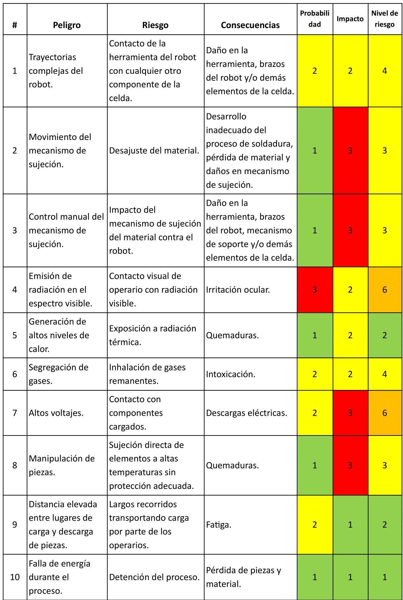
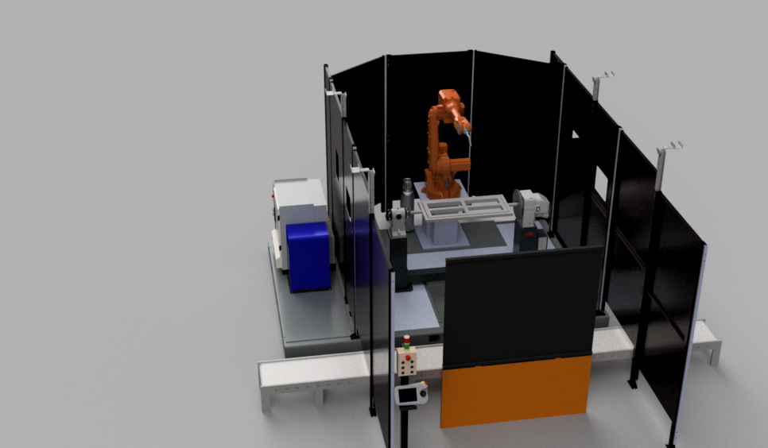

Hoja de ruta
Para iniciar el proceso de diseño de una celda de manufactura robotizada se requiere de una planeación del trabajo a realizar, en donde se establezca un vínculo entre la necesidad de la implementación de la celda robotizada y el diseño de esta. Esto ya que claramente el realizar un diseño de optimización para una planta de producción sin tener en cuenta la situación actual de la misma hace que el beneficio, funcionalidad e implementación de la celda no sean los adecuados. De manera que a continuación se presenta una hoja de ruta diseñada por el equipo A3J, para indicar los pasos a seguir en el diseño de una celda robotizada y en la optimización de los procesos de producción de una planta:
Descripción del producto
Como se ha planteado anteriormente, el principal cuello de botella está ubicado en el proceso de soldadura manual de la estructura metálica de las sillas, donde se requiere de realizar la soldadura de 3 piezas principales, las cuales son las patas, la base del asiento y los espaldares.
Justificación para el proceso de optimización de la celda
Durante este proceso el operario es expuesto a variados peligros para su salud, asociados a la exposición de gases, radiación ultravioleta y luz intensa, chispa y ruido, que a largo plazo pueden producir problemas respiratorios, pérdida de la visión y molestias oculares, quemaduras, pérdida gradual del sentido auditivo y aumento de presión arterial. Muchos de estos factores pueden ser reducidos por medio de los elementos de protección como guantes de puño largo resistentes al fuego, botas con punta de acero, delantal de piel, máscara, overoles resistentes al fuego, gafas de seguridad, cascos y botas altas. Finalmente, los soldadores tienen una alta incidencia en quejas musculoesqueléticas que para evitarlas pueden aplicar diferentes técnicas de postura. Sin embargo, nada puede prevenir el error humano y reducir a cero todos los peligros y riesgos a los que estarán expuestos los operarios soldadores.
Propuesta de celda robotizada
Se plantea la implementación de 3 celdas de soldadura robotizadas en donde cada una de ellas se encargará individualmente de producir las patas, la base del asiento y los espaldares, los cuales requieren de procesos sencillos de soldadura, para que finalmente una persona se encargue de realizar la soldadura necesaria para el ensamble de la estructura completa, ya que tiene zonas de difícil acceso y es un proceso mucho más complejo en comparación con la soldadura de los 3 conjuntos que conforman la estructura.
Las 3 celdas de soldadura van a ser exactamente iguales, teniendo en cuenta únicamente que lo que varía son las trayectorias y cordones de soldadura que haría el robot y la matriz o base en donde reposan y se aseguran las piezas del producto durante la soldadura.
En este caso, el único robot que trabajara en cada celda se dedicará específicamente a realizar cordones de soldadura, se ingresan perfiles de acero estructural A36 cortados con las medidas adecuadas estos se ubican en una matriz de sujeción, en el cual, se acomodan los perfiles de acuerdo con la forma de la estructura que se quiere conseguir, luego, salen los perfiles debidamente soldados en una estructura para la silla.
Flujo de trabajo y ciclo útil
La celda en un ciclo primero deberá estar en pausa , es decir estará parado el robot mientras un operario acomoda los perfiles en el matriz de sujeción (Setup 1), luego este se retirara de la celda y el robot empezará a realizar los cordones de soldadura en las trayectorias que tiene programadas (Work 1), luego el robot hará una nueva parada en una posición segura donde el operario volverá a entrar al área de trabajo y deberá cambiar la posición del marco en el molde (Setup 2), luego de que este salga del área de trabajo del robot el robot volverá a trabajar y terminará de soldar en la estructura, este volverá a parar en una posición segura (Work 2) y el operario sacara la estructura debidamente soldada del molde (Exit).
Así tenemos el duty cycle de la celda es decir el tiempo en el que el robot está trabajando, además sabemos que el tiempo de procesamiento de la celda que es de 420 segundos, es decir 7 minutos.
Diagrama de flujo de trabajo
Diseño de a celda
Selección de herramienta
Antorcha de soldadura WH455D 22°
- Tipo de soldadura: MIG (Metal Inert Gas o soldadura por gas inerte)
- Peso total de antorcha de soldadura: 3 kg
- Longitud del conjunto de cables: 3m (peso por metro aprox. 0,7 kg)
Selección de robot
IRB 2600
Alcance máximo: 1,65m
Capacidad máxima de carga: 12kg
Espacio de trabajo del robot
Teniendo en cuenta las dimensiones generales que ocuparán las piezas en la base para soldadura se realiza la selección del alcance necesario que debe tener el robot.
- Base del asiento: 925mmx386mm
- Espaldares: 925mmx750mm
- Patas laterales: 760mmx362mm
Se realizó una prueba de posicionamiento en robot studio utilizando la matriz correspondiente de mayor área superficial para comprobar que el espacio de trabajo del robot satisface las necesidades de la celda robotizada.
Capacidad de carga del robot
Teniendo en cuenta que se está utilizando para una aplicación de soldadura, las únicas cargas del robot serán la herramienta y el peso del cableado y mangueras para el flujo de material. De manera que se utiliza la herramienta RobotLoad Application, donde se plantean las 2 cargas del robot: la carga a lo largo del brazo superior correspondiente al cableado y la carga producida por la herramienta.
Selección de posicionador
IRBP L
La celda esta compuesta por un posicionador IRBP L que permite un grado de libertad para el posicionamiento del producto en el proceso de soldadura y posee capacidades suficientes para soportar el peso de las piezas a soldar junto con sus respectivos soportes.
- Capacidad de carga: 300 kg
- Longitud de separación: 1250 mm
Selección de componentes de la celda
La celda contiene los siguientes elementos:
- Equipo robot: Panel de operación e indicación - Teach Pendant - Stack light, estación de limpieza de la antorcha: Torch cleaner binzel, módulo de control de la celda IRC-5, módulo para control de soldadura por arco Auto-Axcess 450, tanques de alimentación de gases, base para el robot, pallet.
- Matriz de sujeción de piezas para soldar IRBP L: Con eje rotativo de accionamiento manual, sujetadores de piezas de accionamiento manual, con espacio para soldar dos espaldares simultáneos.
- Banda transportadoras: Entrada de piezas a soldar, salida de pieza soldada.
- Equipos de protección: Cabina para protección de radiación lumínica con barrera de protección visual, paredes de seguridad y ventanas de monitoreo, sistema de extracción e intercambio de gases.
- Equipos control de calidad para proceso de soldadura: Medios ópticos para inspección visual (Lupas, espejos, endoscopios, etc.), galgas inspección geométrica, flexómetro.
Layout de Celda de manufactura robotizada propuesta
Luego de realizar un análisis del margen de mejora y evaluar alternativas de desarrollo, se planteó un diseño de celda robotizada para el módulo de soldadura de la planta de producción, ya que se evidencia de manera clara que en este módulo es donde se produce el principal cuello de botella dentro del proceso de fabricación de las sillas.
Identificación y caracterización de peligros
Se realizó la determinación de peligros y para su identificación de niveles de riesgo se estableció una clasificación basada en nivel de probabilidad y de impacto que pueda tener la ocurrencia de éste evento sobre el proceso, para ello se usó una escala de 1 a 3 donde 1 es baja probabilidad y bajo impacto, 2 es medio y 3 alto. Posteriormente la combinación de estos dos factores determina el nivel de riesgo en una escala de bajo, medio, alto o extremo.

Modelo de la celda robotizada
